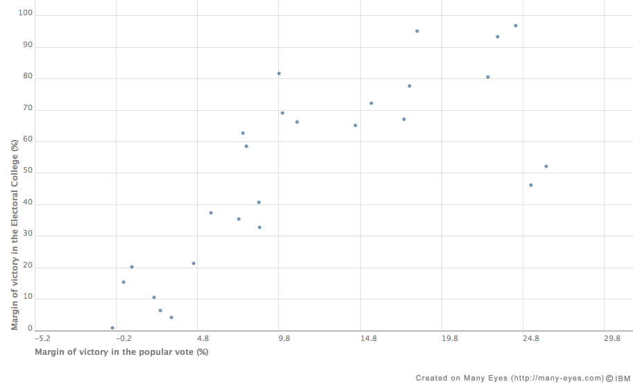

Some have feared that margins of victory might typically be a lot larger or smaller with different voting systems. To investigate that, this page collects victory-margin data of the winner versus the 2nd place finisher, in various important elections using different voting systems.
There are some surprises. Range voting seems to produce larger victory-margins than approval voting (which can be regarded as range voting with only the endpoints of the score-range permitted as valid scores)?! – (happened in 6 our of 7 elections looked at so far) exactly the opposite of what one might naively expect from their Noise Levels arising from random votes.
[I contend noise levels are of little or no importance for predicting real life victory margins, and this surprise, assuming it is not just a statistical illusion/fluke, supports my contention.]
These elections, of course, were conducted using plurality voting.
2000 Gore= 50992335 G.W.Bush= 50455156 (wins in electoral college) Difference= 537179 = 0.53% of the G+B votes = 58*noise NoiseLevel= 10072 1960 (Election substantially fraudulent.) Kennedy= 34226731 (wins) Nixon= 34108157 Difference= 118574 = 0.174 of the K+N votes = 14.3*noise. NoiseLevel= 8266 1876 (Election substantially fraudulent.) Tilden =4285992 Hayes= 4033768 (wins in electoral college) Difference= 252224 = 3.03% of the T+H votes = 87*noise NoiseLevel= 2884
In the above NoiseLevel=√N where N=total number of votes for both of the top 2 candidates combined. The "signal" (i.e. vote difference) far exceeded the "noise" in even the closest election ever, which was 14.3σ.
1984 Reagan= 58.8% Mondale= 40.6% Difference=18.2% 1972 Nixon= 60.7% McGovern= 37.5% Difference=23.2% 1964 Johnson= 61.1% Goldwater= 38.5% Difference=22.6% 1936 F.Roosevelt=60.8% Landon= 36.5% Difference= 24.3% 1920 Harding= 60.3% Cox= 34.1% Difference=26.2% 1904 T.Roosevelt=56.4% Parker= 37.6% Difference= 18.8%
2002 (two-man runoff) Jacques Chirac= 82.21% Jean-Marie Le Pen=17.79% Difference= 64.42%
The margin of victory here got within a factor of 1.55 of maximum possible (which would be 100%). In all 6 US landslides listed, it got within a factor ≤5.5.
France 2007 comparison of victory-margins in different voting systems, given as a percentage of max theoretically possible margin:
Voting system victory margin Plurality: 31.2%-25.9% = 5.3% (official results, first round) SimpleMajority: 53.1%-46.9% = 6.2% (official runoff results) ApprovalVoting: 42.8%-41.6% = 1.2% (2,1,0)RangeVoting: (1.08-0.96)/2 = 6.0% (5,4,3,2,1,0)RangeVote: (3.132-2.825)/5= 6.1% [or (3.041-2.774)/5=5.34%] (5,4,3,2,1,0)MedianScore: (3-3)/5 = 0 Condorcet: 52.0% to 48.0% pairwise = 4.0% (also valid for Coombs final round) PseudoBorda: (859.4-778.7)/1100 = 7.3%
Comparison of victory-margins in several voting systems (using poll data) from USA presidential elections 1988-2008 (expressed as percentage of max possible margin; median scores got from same poll/ballot data as range):
voting system year-1988
Plurality(Official): 7.8%
Approval: 2% (5canddts)
Range (average-based): 6.33% (4pt allowed-score-range, 5canddts)
MedianScore: 0
voting system year-1992
Plurality(Official): 5.6%
Approval: 1.2% (3canddts)
Range: 8.33% (7pt range, 3canddts)
MedianScore: 0
voting system year-1996
Plurality(Official): 8.5%
Approval: 4% (4canddts)
Range: 6.66% (4pt range, 2canddts)
MedianScore: 33.3%
voting system year-2000
Plurality(Official): 0.51%
Approval: 4% (4canddts)
Range: 4.17% or 6.64% (101pt range, 4canddts)
MedianScore: 0
voting system year-2004
Plurality(Official): 2.47%
Approval: 6% (3canddts)
Range: 9.3% (-5 to +5 range omitting 0 thus 10 possible scores, 2canddt)
MedianScore: 10%
voting system year-2008
Plurality(Official): 7.26%
Approval: 21.3% (2canddts)
Range: 5.66% (4pt range among Obama & McCain only; ABC August poll)
MedianScore: 0 (4pt range among Obama & McCain only; ABC August poll)
Range: 4.4% (101pt range among many canddts but we ignore everybody but
Obama & McCain; Gallup August poll)
MedianScore: 3% ? guess based on partial Gallup 101pt range-score data
For approval
voting (each vote is 1=approve or 0=disapprove selected by a coin toss)
N votes should lead to
For continuum range voting with the real interval [0,1] as score range, but based on medians not averaging, assuming uniform random vote-scores, we'd expect noise level (8+4N)-1/2, i.e. essentially the same for large N.
For continuum average-based range voting with the real interval [0,1] as score range, we'd expect noise level (12N)-1/2, i.e. √3 times smaller.